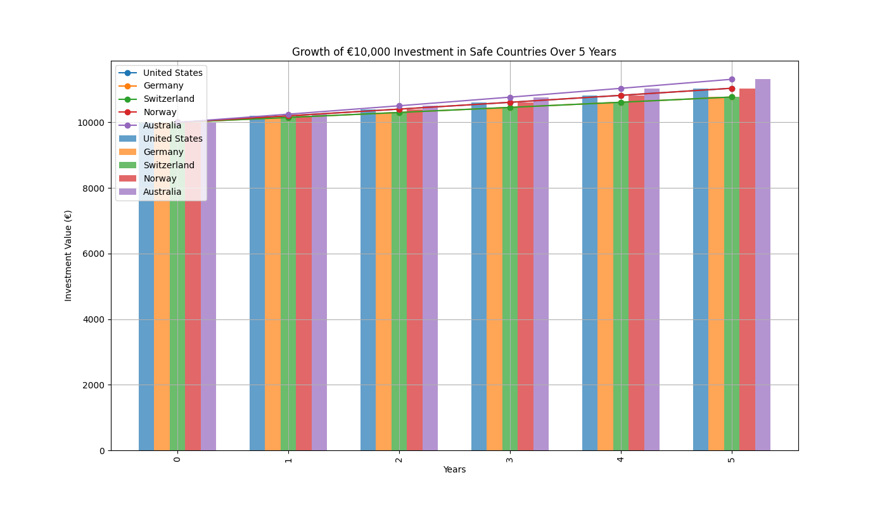
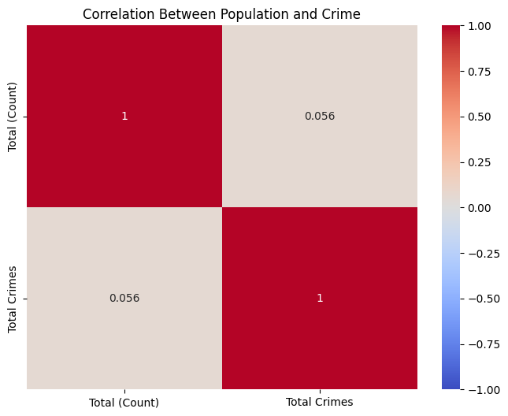
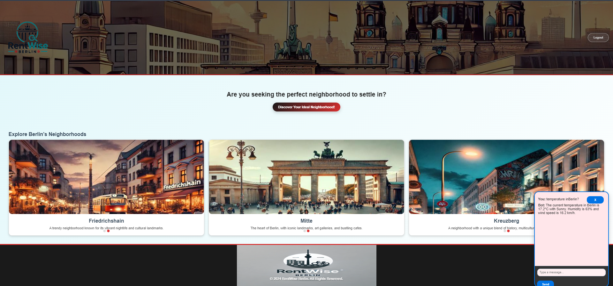
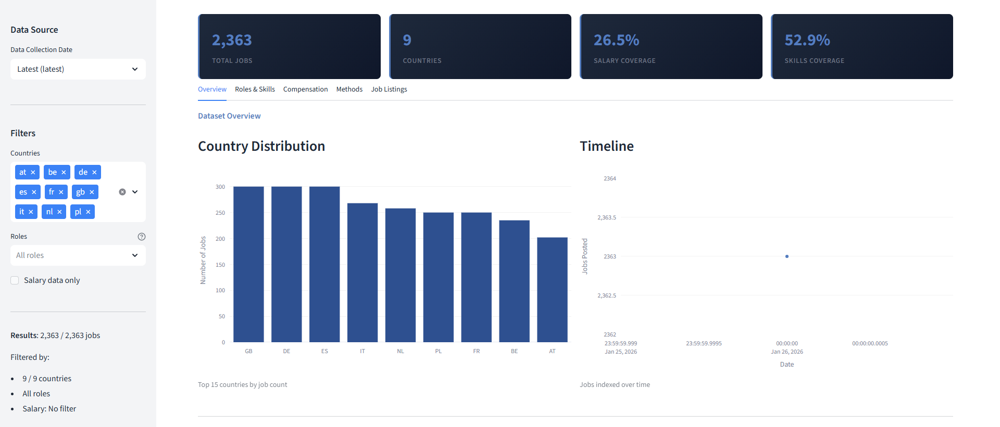
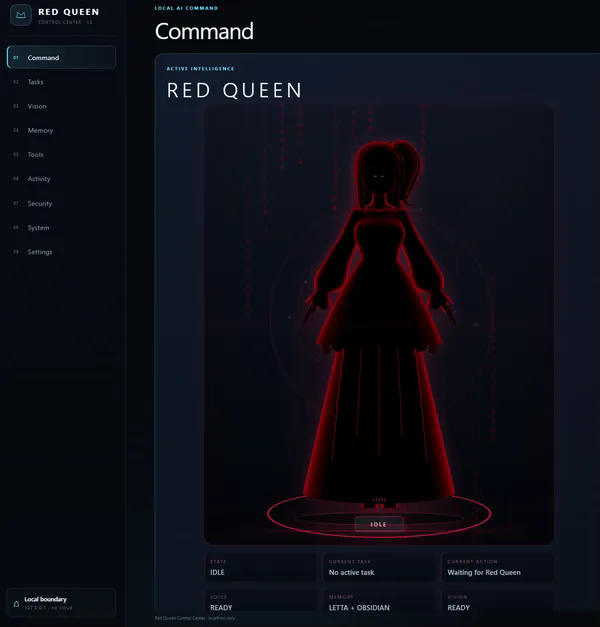

May 2024
Investment Analysis of Emerging Markets
Early data-analysis project comparing potential returns and simple risk indicators across markets.
Python · Analysis · Visualisation
View project →A chronological view of the work I have built over time — from early analysis and ML projects to full-stack applications, local AI systems and research tooling.

Early data-analysis project comparing potential returns and simple risk indicators across markets.

Early analytical project exploring platform usage, engagement patterns and forecasting.

Exploratory correlation and clustering analysis using Berlin demographic and crime datasets.

Public-data exploration of amenities, demographics, crime indicators and lifestyle patterns across Berlin boroughs.
JavaScript racing game built to practise application logic, browser rendering and interaction.
Regression project packaged as an interactive Streamlit prediction app.
Early ML application predicting insurance costs with an interactive Streamlit interface.

Full-stack Django platform for exploring 447 Berlin neighbourhoods with maps, APIs and AI-assisted interaction.

Automated European job-market pipeline with ML classification, historical tracking and dashboarding.

Comparative historical collapse-pattern analysis with uncertainty-aware scenario modelling.
Local real-time face enrollment and recognition using OpenCV and InsightFace.

Local Streamlit dashboard for city-level hospital pressure analysis across the Ruhrgebiet.

Domain-agnostic multi-agent research system built around evidence, analysis, counter-evidence and provenance.

Privacy-first local AI assistant with persistent memory, local inference and controlled desktop tools.

Intelligent 3D neuroanatomy atlas for academic and medical education.